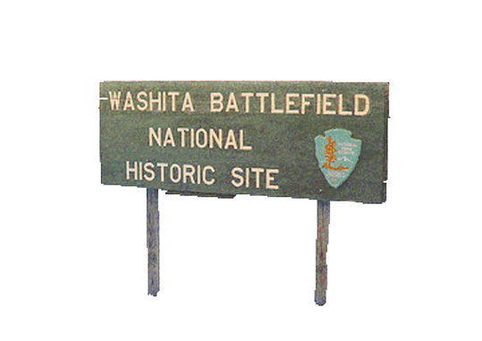

National Memory
 “ With respect to many events of violence and tragedy, American society itself has yet to reach consensus. There seems to be, for example, little consistency in the marking of sites representing either the conflicts between Native Americans and whites or racial violence. These sites remain difficult to assimilate with heroic notions of the national past, and the sites themselves demonstrate a sort of collective equivocation over public meaning and social memory. Perhaps still more time must pass before the tensions raised by such events can be resolved. In Salem almost three hundred years had to pass before a public memorial was erected, that is, before Salem as a community could look back and find a lesson to be learned from the witchcraft episode. What will be the fate of other places of equally equivocal meaning? These are places that may long remain in limbo before American society comes to terms with their meaning and a past marred by violence and tragedy.” -Dr. Kenneth E. Foote, University of ColoradoWashita Is Designated a "Battlefield" in the National Register of Historic Places
In 1983, Washita was added to the National Register of Historic Places. The application process was completed by the Oklahoma Historical Society. This document demonstrates how "battle" language continually became entrenched in public memory associated with Washita.
Washita Becomes a National Park
In 1994, Congressman Frank Lucas of Cheyenne, Oklahoma, sponsored legislation that eventually led to Washita's designation by the National Park Service. It is interesting to read the Congressional "findings" on the first and second page of the bill and how the descriptions do not describe a traditional "battle." Below is a video sponsored by the National Park Service that describes the Washita Battlefield National Historic Site. The Park Historians in the video do not go into great detail about what happened at Washita but they clearly characterize the event as tragic for the Cheyenne people.